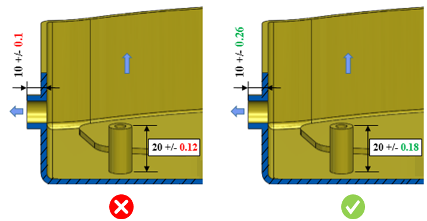

プラスチック成形部品の公差は、製造を容易にするために推奨されるデフォルト値に従う必要があります。
成形公差は、機械加工（穴あけ、フライス加工、旋削加工など）や製缶（板金）形状に適用される公差とは異なります。
公差が厳しくなるほどコストが増え、時間のかかる工程が必要になりますが、得られる表面仕上げの品質は高くなります。特定の機能要件（例えば外観やはめあい（組立仕様）など）に対応するために設計上の要求がある場合を除き、標準公差を推奨します。
プラスチック成形では、ISOの基本公差から公差を採用することはできません。これは、ISOの基本公差が他の原理に基づき、呼び寸法に対して相関しているためです。
プラスチックの成形では寸法ばらつきを避けることはできません。これは次の要因により発生します：
過度に厳しい公差はコスト増と生産性低下につながります。適切な公差を持つ部品は、優れたはめあいと機能を備え、製造効率も向上します。
プラスチック部品の推奨成形公差は、材料、寸法、および位置に依存します。デフォルト構成では標準公差が示され、機能要件によってより高い／低い精度が求められる場合を除き、すべてのケースに適用されます。
DFMProはCADモデルから該当する金型寸法を特定し、関連する寸法／幾何公差を読み取り、それらを構成された値に対して検証します。
プラスチック部品の寸法に公差が指定されている場合にのみ、その公差が、材料・寸法・寸法の位置に対応する表の推奨値に対してチェックされます。
必要に応じて、デフォルトの構成値を編集してください。公差の構成は次のとおりです：
この場合、可動部品の閉位置が毎回わずかに変動する可能性があるため、前者のケースより公差は大きくなります。デフォルトではノーマル公差のみが許可されますが、必要に応じてユーザーが上書きできます。個別（Individual）および精密（Precision）公差はデフォルト構成ではサポートされていませんが、既存の値を置き換えることで構成できます。

注：
CADモデルに与えられている公差は、eDrawingsレポートには表示されません。
Rule Managerでは、構成する公差値を「公差範囲」の形式で指定してください。例えば、推奨公差が +/- 0.08 の場合、表には 0.16 を追加します。